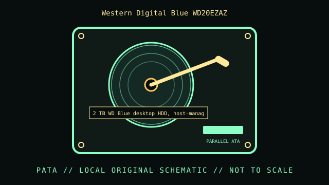

[ INDIVIDUAL COMPONENT // HARD DISK DRIVE ]
Western Digital Blue WD20EZAZ
2 TB WD Blue desktop HDD with device-managed SMR. This record is limited to the exact model and documented variant; related model numbers, revisions and capacities can have different interfaces and specifications.

IDENTIFICATION: Match the complete label, suffix, firmware and drive inquiry with the cited model documentation. Do not infer sector format or recording method from product family alone.
Verified model specifications
| Dedicated catalog subcategory | SMR SATA drives |
|---|---|
| Exact model | Western Digital Blue WD20EZAZ |
| Product generation | 2 TB WD Blue desktop HDD with device-managed SMR |
| Form factor | 3.5-inch desktop; this classification is not a dimensional drawing. |
| Interface | SATA 6 Gb/s family. |
| Capacity, performance, sector / recording details | 2 TB; 5400 RPM class and 256 MB cache per WD model sheet. Western Digital’s SMR SKU list identifies WD20EZAZ as SMR; do not imply CMR random-write behavior. Sector reporting and firmware are unit-specific. |
| Compatibility | SATA host; host sees a conventional block device, but sustained random writes and rebuilds may behave differently due to device-managed SMR. Avoid use as a high-write RAID/NAS replacement without workload validation. |
Handling, service & preservation
- Expect long internal reorganization after heavy writes; do not interrupt power during activity. For preservation, allow idle time after bulk writes and maintain an independent verified backup.
- Photograph the full label, board marks, connectors, jumpers/carrier, and date/firmware codes before service; retain the exact model suffix with collection metadata.
- Never open a hard drive outside a qualified clean environment. Stop repeated power-on attempts if the unit clicks, drops offline, or develops read errors.
- Preserve source data by making independent copies and validating checksums; SMART/self-tests cannot guarantee reliability. Distinguish measured condition from manufacturer specifications.
Model-specific source
- WD Blue desktop HDD datasheet and WD published SMR SKU listWD’s SMR SKU document explicitly lists WD20EZAZ; consult the model datasheet for speed/capacity particulars. Recording type should be attributed to this model, not all WD Blue drives.
- Western Digital WD Blue desktop HDD datasheetManufacturer specifications for the WD Blue desktop family; verify the specific WD20EZAZ model row and product code.
For variants with family manuals, use the model-specific table and document revision that matches the drive label.